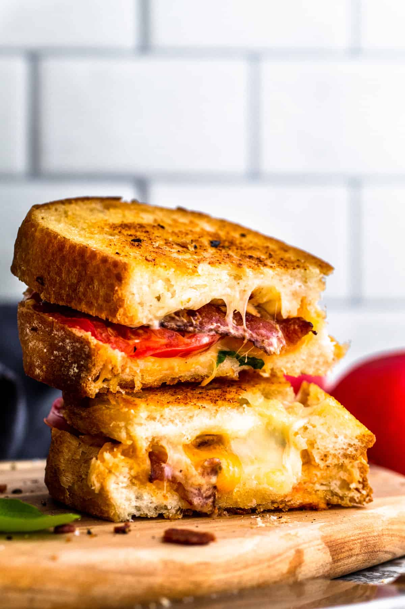

Not Another Grilled Cheese

Caprese Grilled Cheese with Mushrooms
This is a grilled cheese originally from a restaurant in my home town.
While I like the original, I can no longer get it where I live, and I have changed some of its preparation and, I think, improved it.
Ingredients:
- Baguette, sliced
- Baby Swiss Cheese
- Portabella Mushrooms, sliced
- Baby spinach
- Fresh Basil, chopped
- Fresh Tomato
- Olive Oil & Butter
Steps:
- Thinly slice tomato.
- Heat olive oil in a pan (two pans are ideal).
- Roast sliced mushrooms until cooked.
- In same or separate pan, place tomato slices in hot pan with chopped basil.
- Allow tomato to cook down into a sauce.
- Assemble sandwich with preferred amount of baby Swiss, baby spinach, roasted mushrooms, and top with tomato sauce.
- Either with a buttered pan or buttered bread, heat sandwich to desired doneness.
- Enjoy